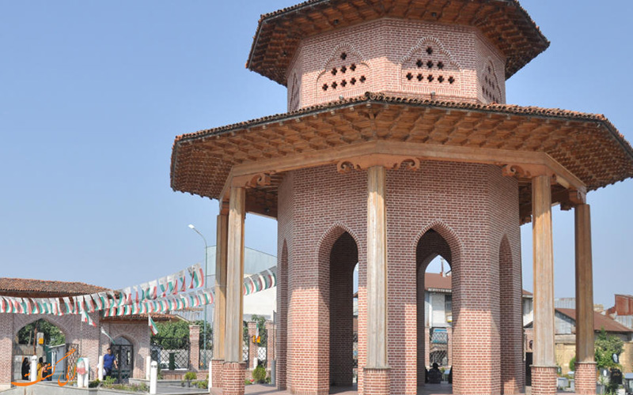

| رَشت (به گیلکی: رٚشت) ، کلانشهری در شمال ایران، مرکز استان گیلان در شمال ایران و مرکز شهرستان رشت است و مادرشهر استان گیلان و بخشهایی از استانهای همجوار است. از رشت بهعنوان شهر همیشه بیدار یاد میکنند. این کلانشهر همچنین پرجمعیتترین شهر شمال ایران در بین سه استان حاشیهٔ دریای خزر و بزرگترین و پرجمعیتترین شهر گیلکنشین جهان، بزرگترین سکونتگاه سواحل جنوبی دریای خزر محسوب میشود. در تابستان ۱۳۹۲، رشت سومین شهر بازدیدشده توسط گردشگران در ایران بود. براساس آخرین دادههای جغرافیایی دیتاسنتر ماهواره ای سیستم اطلاعات جغرافیا؛ بیشترین درازای شهر رشت ۳۶ کیلومتر است. (یعنی از این سمت تا آن سمت شهر بر مبنای بیشترین حالت ممکن ۳۶ کیلومتر راه است). بر اساس سرشماری رسمی سال ۱۳۹۵، جمعیت شهر رشت تعداد ۶۷۹٬۹۹۵ نفر است. جمعیت شناور ثابت روزانهٔ شهر رشت بهعنوان مادرشهر استان گیلان بالغ بر ۱٬۰۰۰٬۰۰۰ نفر است. جمعیت این شهر در تعطیلات و ماههای گردشگری سال بالغ بر دومیلیون نفر است. رشت فشردهترین شهر ایران بهلحاظ نسبت جمعیت به وسعت است و از لحاظ نسبت جمعیت در روز و شب نیز رتبهٔ نخست کشور را دارد. |
 |